1. 先取得ESP8266硬體資訊

GPIO0 浮接
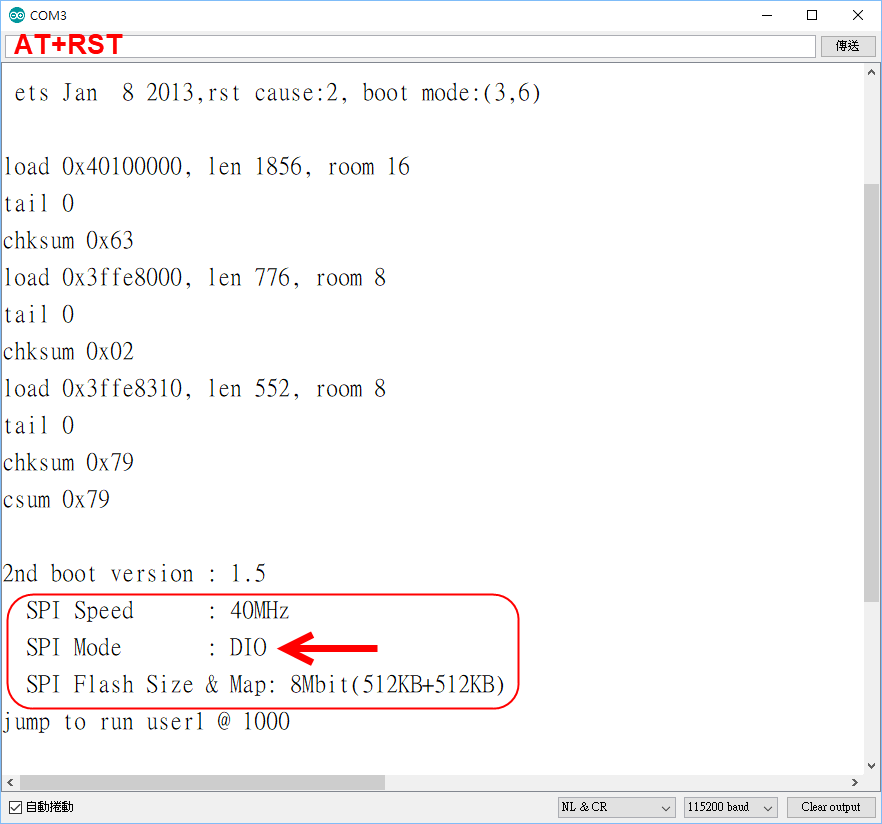
有的為"QIO"或 "DOUT" 需先確認
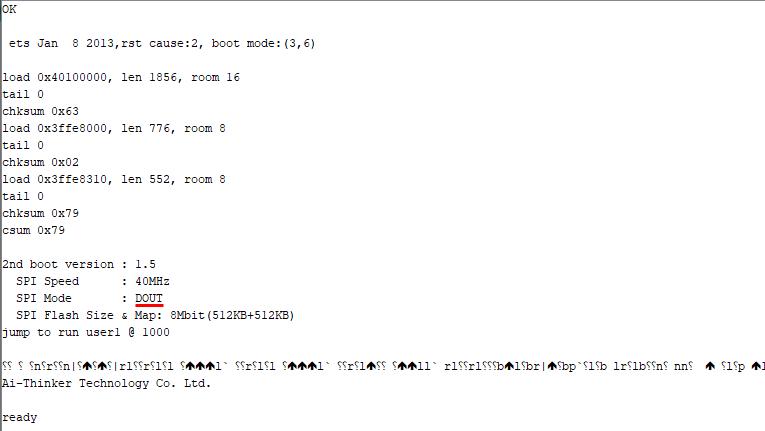
| 請截圖記錄(進行Arduino 程式燒錄後後,就無法再執行 AT+RST) |
若無法顯示上述資訊
回復原廠設定(link)
| 1.
ESP8266的程式開發原本需要了解FreeRTOS即時作業系統，並用專業C語言撰寫， 2. 用Arduino IDE開發環境就能撰寫ESP8266控 制程式， 3. NodeMCU專案可以用eLua語言來開發ESP8266控制程式， 4. Smart.js專案可以用JavaScript語言來開發ESP8266控制程式， Smart.js專案之後轉入Mongoose IoT Firmware，或MicroPython專案使其能用Python語言開發等。 WIKI |
|
Arduino 開發環境設定 |
1. 先取得ESP8266硬體資訊 GPIO0 浮接  有的為"QIO"或 "DOUT" 需先確認 
若無法顯示上述資訊 回復原廠設定(link) |
| 2. 進行Arduino IDE 設定 |
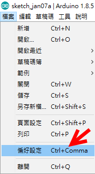 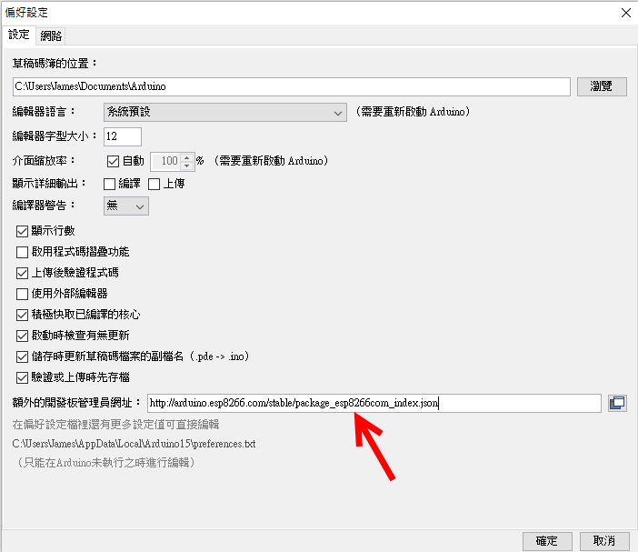 http://arduino.esp8266.com/stable/package_esp8266com_index.json |
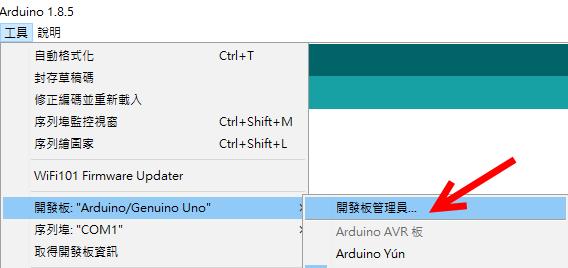 搜尋 ESP 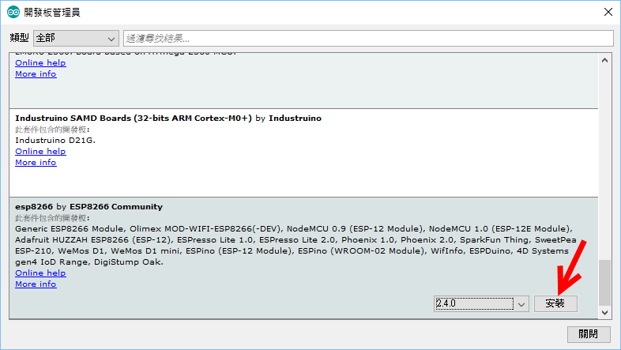 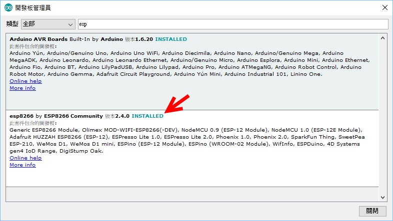 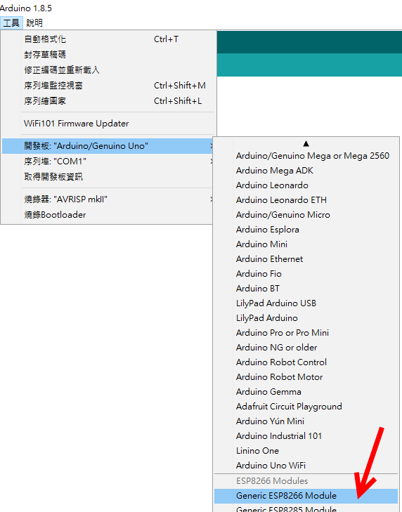
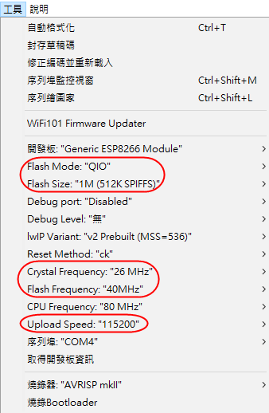 |
| 4. 以Arduino IDE 燒入確認程式 |
 Arduino ESP upload (GPIO0 接地) 使 用範例CheckFlashConfig驗證參數設定是否正確 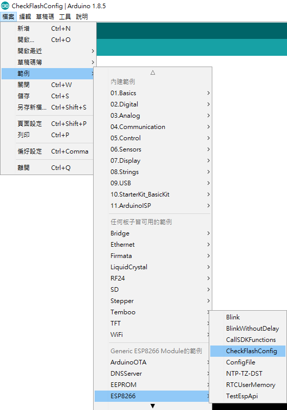
gpio0 浮接 重新上電 打開 Serial Monitor 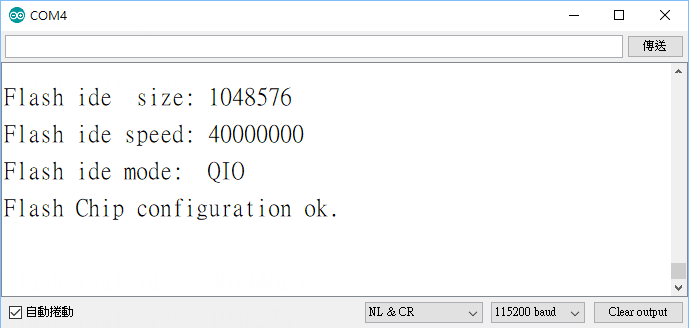 看到 Flash chip configuration ok. 表示 Arduino IDE 設定成功! 可以開始使用Arduino IDE 開發ESP8266程式 |
ESP01S 燒錄模式 接腳狀態 GPIO 0 接地 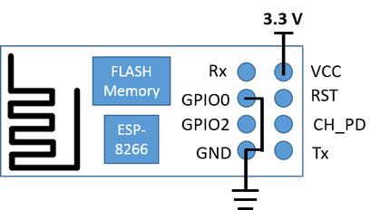 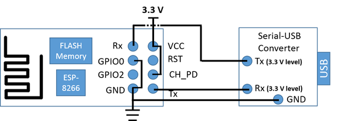 ESP01S 執行模式 接腳狀態 GPIO 0 浮接 |
| https://github.com/esp8266/Arduino Documetation ESP8266WiFi library |